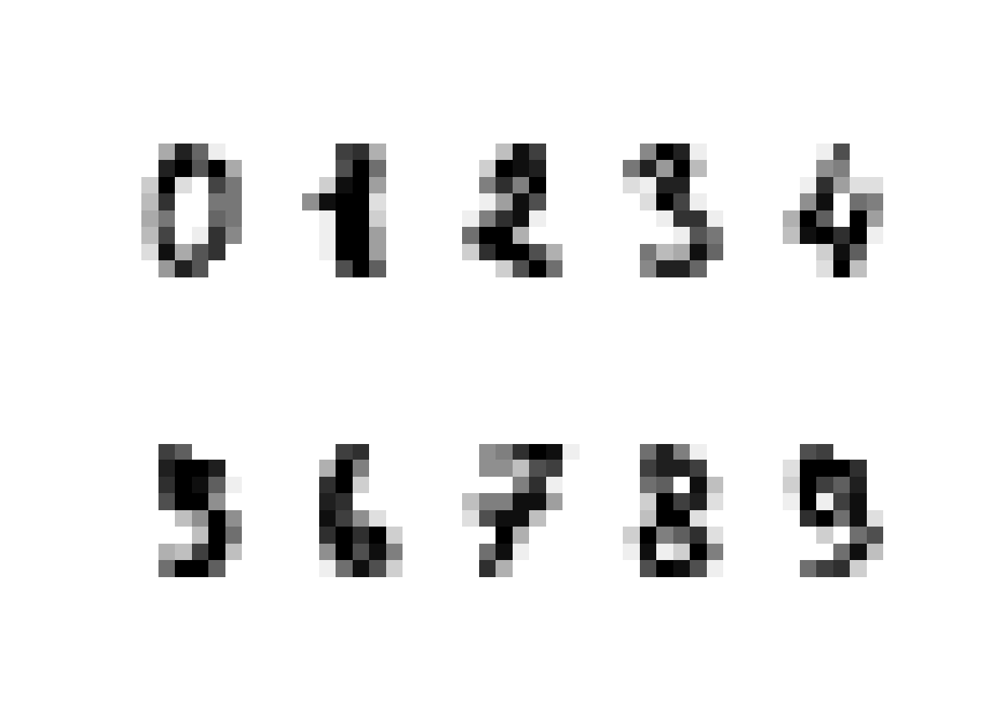
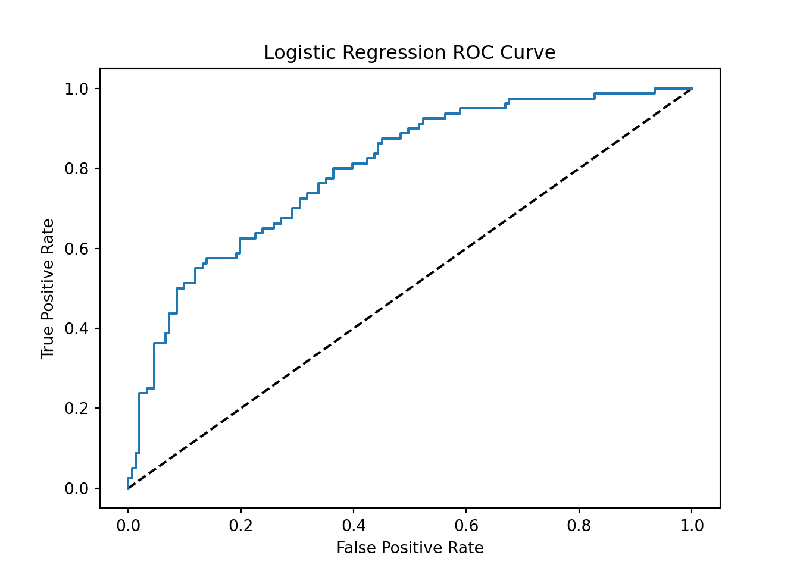
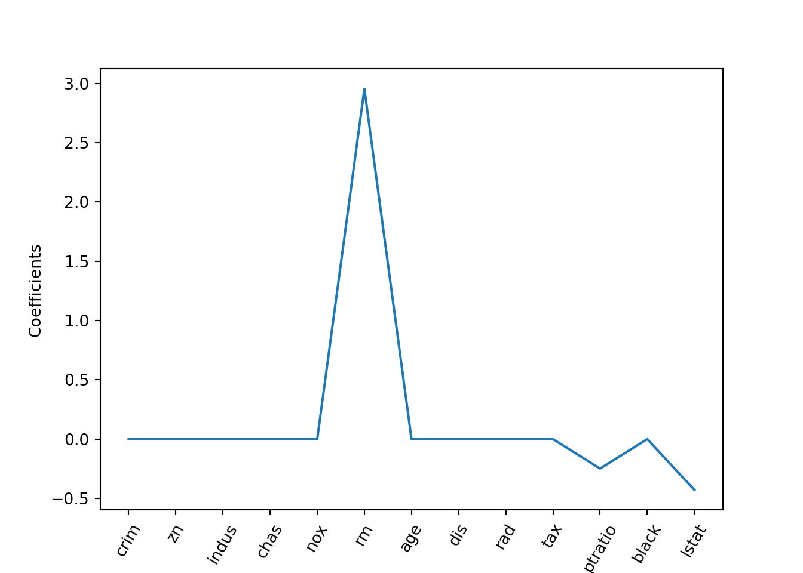

Lesson 9 More Regression/Classification
import pandas as pd
import numpy as np
import matplotlib as mpl
import matplotlib.pyplot as plt
from sklearn.neighbors import KNeighborsClassifier
from sklearn.model_selection import train_test_split
from sklearn import datasets
# %precision 39.1 Other Classifiers
9.1.1 K-Nearest Neighbors (KNN)

iris = datasets.load_iris()
knn = KNeighborsClassifier(n_neighbors=6)
knn.fit(iris['data'], iris['target'])## KNeighborsClassifier(n_neighbors=6)Task: Split the iris data into training and test. Predict on test
# Split into training and test set
X = iris['data']
y = iris['target']
X_train, X_test, y_train, y_test = train_test_split(X, y, test_size = 0.3, random_state=42)
# Create a k-NN classifier with 7 neighbors: knn
knn = KNeighborsClassifier(n_neighbors=6)
# Fit the classifier to the training data
knn.fit(X_train, y_train)
# Print the accuracy## KNeighborsClassifier(n_neighbors=6)print(knn.score(X_test, y_test))## 1.0Simple Idea, no modeling assumptions at all !! Think about the following:
- What is “the model,” i.e. what needs to be stored ? (coefficients, functions, …)
- What is the model complexity ?
- Does this only work for classification ? What would be the regression analogy ?
- What improvements could we make to the simple idea ?
- In the modeling world:
- linear ?
- local vs. global
- memory/CPU requirements
- wide versus tall data ?
9.1.1.1 Handwritten Digits
digits = datasets.load_digits()
import matplotlib.pyplot as plt
#how can I improve the plots ? (i..e no margins, box around plot...)
plt.figure(1)
for i in np.arange(10)+1:
plt.subplot(2, 5, i)
plt.axis('off')
#plt.gray()
#plt.matshow(digits.images[i-1])
plt.imshow(digits.images[i-1], cmap=plt.cm.gray_r, interpolation='nearest')
plt.show()
# Create feature and target arrays
X = digits.data
y = digits.target
# Split into training and test set
X_train, X_test, y_train, y_test = train_test_split(X, y, test_size = 0.2, random_state=42, stratify=y)
# Create a k-NN classifier with 7 neighbors: knn
knn = KNeighborsClassifier(n_neighbors=7)
# Fit the classifier to the training data
knn.fit(X_train, y_train)
# Print the accuracy## KNeighborsClassifier(n_neighbors=7)print(knn.score(X_test, y_test))## 0.9833333333333333# Big Confusion Matrix
preds = knn.predict(X_test)
pd.crosstab(preds,y_test)## col_0 0 1 2 3 4 5 6 7 8 9
## row_0
## 0 36 0 0 0 0 0 0 0 0 0
## 1 0 36 0 0 0 0 0 0 2 0
## 2 0 0 35 0 0 0 0 0 0 0
## 3 0 0 0 37 0 0 0 0 0 0
## 4 0 0 0 0 36 0 0 0 0 1
## 5 0 0 0 0 0 37 0 0 0 0
## 6 0 0 0 0 0 0 35 0 0 0
## 7 0 0 0 0 0 0 0 36 1 0
## 8 0 0 0 0 0 0 1 0 32 1
## 9 0 0 0 0 0 0 0 0 0 34Task
Construct a model complexity curve for the digits dataset! In this exercise, you will compute and plot the training and testing accuracy scores for a variety of different neighbor values. By observing how the accuracy scores differ for the training and testing sets with different values of k, you will develop your intuition for overfitting and underfitting.
# # Setup arrays to store train and test accuracies
# neighbors = np.arange(1, 20)
# train_accuracy = np.empty(len(neighbors))
# test_accuracy = np.empty(len(neighbors))
#
# # Loop over different values of k
# for i, k in enumerate(neighbors):
# # Setup a k-NN Classifier with k neighbors: knn
# knn = KNeighborsClassifier(___)
#
# # Fit the classifier to the training data
# ___
#
# #Compute accuracy on the training set
# train_accuracy[i] = ___
#
# #Compute accuracy on the testing set
# test_accuracy[i] = ___
#
# # Generate plot
# plt.title('k-NN: Varying Number of Neighbors')
# plt.plot(___, label = 'Testing Accuracy')
# plt.plot(___, label = 'Training Accuracy')
# plt.legend()
# plt.xlabel('Number of Neighbors')
# plt.ylabel('Accuracy')
# plt.show()9.1.2 Multinomial Logistic Regression
from sklearn.linear_model import LogisticRegression
iris = datasets.load_iris()
log_reg = LogisticRegression(multi_class='multinomial',solver='sag', max_iter=100, random_state=42)
log_reg.fit(iris["data"][:,3:],iris["target"])## LogisticRegression(multi_class='multinomial', random_state=42, solver='sag')preds = log_reg.predict_proba(iris["data"][:,3:])
preds[1:5,:]## array([[9.25859359e-01, 7.39618434e-02, 1.78797175e-04],
## [9.25859359e-01, 7.39618434e-02, 1.78797175e-04],
## [9.25859359e-01, 7.39618434e-02, 1.78797175e-04],
## [9.25859359e-01, 7.39618434e-02, 1.78797175e-04]])Task: Compute a confusion matrix
Further Reading and Explorations: * Read about “one versus all” pitted against multinomial. Check out this notebook. * Read about marginal probabilities.
9.1.3 ROC Curves
Simplest to go back to 2 labels from lesson 7:
iris = datasets.load_iris()
X = iris["data"][:,3:]
y = (iris["target"]==2).astype(int)
# Split into training and test set
X_train, X_test, y_train, y_test = train_test_split(X, y, test_size = 0.3, random_state=42)
log_reg = LogisticRegression()
log_reg.fit(X_train,y_train)## LogisticRegression()y_pred = log_reg.predict_proba(X_test)
y_pred_prob = y_pred[:,1]
from sklearn.metrics import classification_report
from sklearn.metrics import confusion_matrix
print(confusion_matrix(y_test, y_pred_prob > 0.25 ))## [[24 8]
## [ 0 13]]print(confusion_matrix(y_test, y_pred_prob > 0.5 ))## [[32 0]
## [ 0 13]]print(confusion_matrix(y_test, y_pred_prob > 0.75 ))## [[32 0]
## [ 4 9]]The need for more sophisticated metrics than accuracy and single thresholding
This is particularly relevant for imbalanced classes, example: Emails
- Spam classification
- 99% of emails are real; 1% of emails are spam
- Could build a classifier that predicts ALL emails as real
- 99% accurate!
- But horrible at actually classifying spam
- Fails at its original purpose


Metrics from CM
- Precision: \[\frac{TP}{TP+FP}\]
- Recall: \[\frac{TP}{TP+FN}\]
- F1 score: \[2 \cdot \frac{precision \cdot recall}{precision + recall}\] The F1 score is the harmonic average of the precision and recall, where an F1 score reaches its best value at 1 (perfect precision and recall) and worst at 0. ()
- High precision: Not many real emails predicted as spam
- High recall: Predicted most spam emails correctly
#Example:print(classification_report(y_test, y_pred_prob > 0.5 ))## precision recall f1-score support
##
## 0 1.00 1.00 1.00 32
## 1 1.00 1.00 1.00 13
##
## accuracy 1.00 45
## macro avg 1.00 1.00 1.00 45
## weighted avg 1.00 1.00 1.00 45But we still need to fix a threshold for any of the metrics above to work !
Wouldn’t it be best to communicate the prediction quality over a wide range (all!) of thresholds and enable the user to choose the most suitable one for his/her application ! That is the idea of the Receiver Operating Characteristic (ROC) curve!

#The pima-indians- diabetes data:
# https://www.kaggle.com/uciml/pima-indians-diabetes-database#diabetes.csv
col_names = ['pregnant', 'glucose', 'bp', 'skin', 'insulin', 'bmi', 'pedigree', 'age', 'label']
# load dataset
pima = pd.read_csv("../data/diabetes.csv", header=None, names=col_names,skiprows=[0])
pima.head()## pregnant glucose bp skin insulin bmi pedigree age label
## 0 6 148 72 35 0 33.6 0.627 50 1
## 1 1 85 66 29 0 26.6 0.351 31 0
## 2 8 183 64 0 0 23.3 0.672 32 1
## 3 1 89 66 23 94 28.1 0.167 21 0
## 4 0 137 40 35 168 43.1 2.288 33 1pima.info()## <class 'pandas.core.frame.DataFrame'>
## RangeIndex: 768 entries, 0 to 767
## Data columns (total 9 columns):
## # Column Non-Null Count Dtype
## --- ------ -------------- -----
## 0 pregnant 768 non-null int64
## 1 glucose 768 non-null int64
## 2 bp 768 non-null int64
## 3 skin 768 non-null int64
## 4 insulin 768 non-null int64
## 5 bmi 768 non-null float64
## 6 pedigree 768 non-null float64
## 7 age 768 non-null int64
## 8 label 768 non-null int64
## dtypes: float64(2), int64(7)
## memory usage: 54.1 KBa = [1,2,3]
b = [*a]
b## [1, 2, 3]#split dataset in features and target variable
feature_cols = ['pregnant', 'insulin', 'bmi', 'age','glucose','bp','pedigree']
X = pima[feature_cols] # Features
y = pima.label # Target variable
X_train, X_test, y_train, y_test = train_test_split(X, y, test_size = 0.3, random_state=42)log_reg = LogisticRegression(max_iter=200)
log_reg.fit(X_train,y_train)## LogisticRegression(max_iter=200)y_pred = log_reg.predict_proba(X_test)
y_pred_prob = y_pred[:,1]# # Setup arrays to store train and test accuracies
# neighbors = np.arange(1, 20)
# train_accuracy = np.empty(len(neighbors))
# test_accuracy = np.empty(len(neighbors))
#
# # Loop over different values of k
# for i, k in enumerate(neighbors):
# # Setup a k-NN Classifier with k neighbors: knn
# knn = KNeighborsClassifier(___)
#
# # Fit the classifier to the training data
# ___
#
# #Compute accuracy on the training set
# train_accuracy[i] = ___
#
# #Compute accuracy on the testing set
# test_accuracy[i] = ___
#
# # Generate plot
# plt.title('k-NN: Varying Number of Neighbors')
# plt.plot(___, label = 'Testing Accuracy')
# plt.plot(___, label = 'Training Accuracy')
# plt.legend()
# plt.xlabel('Number of Neighbors')
# plt.ylabel('Accuracy')
# plt.show()from sklearn.metrics import roc_curve
fpr, tpr, thresholds = roc_curve(y_test, y_pred_prob)
plt.plot([0, 1], [0, 1], 'k--')
plt.plot(fpr, tpr, label='Logistic Regression')
plt.xlabel('False Positive Rate')
plt.ylabel('True Positive Rate')
plt.title('Logistic Regression ROC Curve')
plt.show();
Area under the ROC curve (AUC)
from sklearn.metrics import roc_auc_score
roc_auc_score(y_test, y_pred_prob)## 0.7969370860927152AUC using cross-validation
from sklearn.model_selection import cross_val_score
cv_scores = cross_val_score(log_reg, X, y, cv=10, scoring='roc_auc')
print(cv_scores)## [0.78888889 0.83037037 0.83777778 0.77333333 0.81185185 0.84814815
## 0.81925926 0.92148148 0.85692308 0.83307692]9.1.4 Regularized Regression
We will illustrate the concepts on the Boston housing data set
boston = pd.read_csv('../data/boston.csv')
#print(boston.head())
X = boston.drop('medv', axis=1).values
y = boston['medv'].valuesVariable Selection
ISLR slides on model selection
9.1.4.1 L2 Regression
Recall: Linear regression minimizes a loss function - It chooses a coefficient for each feature variable - Large coefficients can lead to overfitting - Penalizing large coefficients: Regularization
Detour: \(L_p\) norms
http://mathworld.wolfram.com/VectorNorm.html
Our new penalty term in finding the coefficients \(\beta_j\) is the minimization
\[ \sum_{i=1}^n{\left( y_i - \beta_0 - \sum_{j=1}^p{\beta_j x_{ij}} \right)^2} + \lambda \sum_{j=1}^p{\beta_j^2} = RSS + \lambda \sum_{j=1}^p{\beta_j^2} \]
Instead of obtaining one set of coefficients we have a dependency of \(\beta_j\) on \(\lambda\):

from sklearn.linear_model import Ridge
X_train, X_test, y_train, y_test = train_test_split(X, y,test_size = 0.3, random_state=42)
ridge = Ridge(alpha=0.1, normalize=True)
ridge.fit(X_train, y_train)## Ridge(alpha=0.1, normalize=True)ridge_pred = ridge.predict(X_test)#?does this automatically take care of nromalization ??
#Returns the coefficient of determination R^2 of the prediction.
ridge.score(X_test, y_test)## 0.6996938275127313ridge_pred[0:5]## array([27.97023765, 35.38307715, 16.82607459, 25.14515158, 18.74860504])ridge2 = Ridge(alpha=0.1, normalize=False)
ridge2.fit(X_train, y_train)## Ridge(alpha=0.1)ridge2_pred = ridge2.predict(X_test)
ridge2_pred[0:5]## array([28.59300181, 36.45275937, 15.30416262, 25.37120109, 18.91168087])ridge2.coef_## array([-1.32535034e-01, 3.59944827e-02, 4.38480378e-02, 3.09567615e+00,
## -1.40625952e+01, 4.06131940e+00, -1.20010626e-02, -1.36547356e+00,
## 2.39463689e-01, -8.81732204e-03, -8.95518536e-01, 1.18278475e-02,
## -5.49776010e-01])9.1.4.2 L1 Regression
Our penalty termy looks slightly different (with big consequences for sparsity)
\[ \sum_{i=1}^n{\left( y_i - \beta_0 - \sum_{j=1}^p{\beta_j x_{ij}} \right)^2} + \lambda \sum_{j=1}^p{| \beta_j |} = RSS + \lambda \sum_{j=1}^p{| \beta_j |} \]

(Comment: LASSO = “least absolute shrinkage and selection operator”)
from sklearn.linear_model import Lasso
lasso = Lasso(alpha=0.1, normalize=True)
lasso.fit(X_train, y_train)## Lasso(alpha=0.1, normalize=True)lasso_pred = lasso.predict(X_test)
#Returns the coefficient of determination R^2 of the prediction.
lasso.score(X_test, y_test)## 0.5950229535328551lasso.coef_## array([-0. , 0. , -0. , 0. , -0. ,
## 3.18852894, -0. , -0. , -0. , -0. ,
## -0.3066901 , 0. , -0.48666476])Feature Selection Property of the LASSO
names = boston.drop('medv', axis=1).columns
lasso_coef = lasso.fit(X, y).coef_
_ = plt.plot(range(len(names)), lasso_coef)
_ = plt.xticks(range(len(names)), names, rotation=60)
_ = plt.ylabel('Coefficients')
plt.show()
Tuning the shrinkage parameter with CV
(It seems that \(\lambda\) is often referred to as \(\alpha\))
From sklearn.linear_model:
- LassoCV
- RidgeCV
- GridSearchCV
from sklearn.linear_model import RidgeCV
reg = RidgeCV(alphas=[1e-3, 1e-2, 1e-1, 1],store_cv_values = True)
reg.fit(X, y)## RidgeCV(alphas=array([0.001, 0.01 , 0.1 , 1. ]), store_cv_values=True)reg.score(X, y)## 0.7406421899247916reg.cv_values_
#Open Questions:
#1. how to extract all scores, possibly even the individual folds?
#2. What is the optimal alpha ??
#reg.cv_values_## array([[ 37.30292142, 37.34720525, 37.76559526, 40.43439122],
## [ 11.99700574, 11.97375126, 11.75676579, 10.50095584],
## [ 17.48829647, 17.4924878 , 17.53207192, 17.7864549 ],
## ...,
## [ 14.6418552 , 14.67645052, 15.00346175, 17.07274067],
## [ 17.86227108, 17.90234473, 18.28115447, 20.68282383],
## [113.70883594, 113.81266571, 114.7926396 , 120.99657642]])from sklearn.linear_model import LassoCV
reg = LassoCV(cv=5, random_state=0).fit(X, y)
reg.score(X, y)## 0.7024437179872696from sklearn.model_selection import KFold
from sklearn.model_selection import GridSearchCV
diabetes = datasets.load_diabetes()
X = diabetes.data[:150]
y = diabetes.target[:150]
lasso = Lasso(random_state=0,max_iter=2000)
#logarithmically spaced sequence
alphas = np.logspace(-4, -0.5, 20)
tuned_parameters = [{'alpha': alphas}]
n_folds = 5
reg = GridSearchCV(lasso, tuned_parameters, cv=n_folds, refit=False)
reg.fit(X, y)## GridSearchCV(cv=5, estimator=Lasso(max_iter=2000, random_state=0),
## param_grid=[{'alpha': array([1.00000000e-04, 1.52830673e-04, 2.33572147e-04, 3.56969885e-04,
## 5.45559478e-04, 8.33782223e-04, 1.27427499e-03, 1.94748304e-03,
## 2.97635144e-03, 4.54877795e-03, 6.95192796e-03, 1.06246783e-02,
## 1.62377674e-02, 2.48162892e-02, 3.79269019e-02, 5.79639395e-02,
## 8.85866790e-02, 1.35387618e-01, 2.06913808e-01, 3.16227766e-01])}],
## refit=False)scores = reg.cv_results_['mean_test_score']
scores_std = reg.cv_results_['std_test_score']
plt.figure().set_size_inches(8, 6)
plt.semilogx(alphas, scores)
# plot error lines showing +/- std. errors of the scores## [<matplotlib.lines.Line2D object at 0x7ff963e6a470>]std_error = scores_std / np.sqrt(n_folds)
plt.semilogx(alphas, scores + std_error, 'b--')## [<matplotlib.lines.Line2D object at 0x7ff963bc60b8>]plt.semilogx(alphas, scores - std_error, 'b--')
# alpha=0.2 controls the translucency of the fill color## [<matplotlib.lines.Line2D object at 0x7ff963e51898>]plt.fill_between(alphas, scores + std_error, scores - std_error, alpha=0.2)## <matplotlib.collections.PolyCollection object at 0x7ff963bea978>plt.ylabel('CV score +/- std error')## Text(0, 0.5, 'CV score +/- std error')plt.xlabel('alpha')## Text(0.5, 0, 'alpha')plt.axhline(np.max(scores), linestyle='--', color='.5')## <matplotlib.lines.Line2D object at 0x7ff961c21390>plt.xlim([alphas[0], alphas[-1]])## (0.0001, 0.31622776601683794)How much can you trust the selection of alpha?
Task: Find the opimal Alpha parameters (maximising the generalization score) on different subsets of the data
9.1.4.3 ElasticNet
The mystery of the additional \(\alpha\) paramater
- The elastic net for correlated variables, which uses a penalty that is part L1, part L2.
- Compromise between the ridge regression penalty \((\alpha = 0)\) and the lasso penalty \((\alpha = 1)\).
- This penalty is particularly useful in the \(p >> N\) situation, or any situation where there are many correlated predictor variables.
\[ RSS + \lambda \sum_{j=1}^p{ \left( \frac{1}{2} (1-\alpha) \beta_j^2 + \alpha | \beta_j | \right)} \] The right hand side can be written as \[ \sum_{j=1}^p{ \frac{1}{2} \lambda (1-\alpha) \beta_j^2 + \alpha \lambda | \beta_j |} = \sum_{j=1}^p{ \lambda_R \beta_j^2 + \lambda_L | \beta_j |} \] with the Ridge penalty parameter \(\lambda_R \equiv \frac{1}{2} \lambda (1-\alpha)\) and the lasso penalty parameter \(\lambda_L \equiv \alpha \lambda\). So we see that with \[ \alpha = \frac{\lambda_L}{\lambda_L+ 2 \lambda_R}, \mbox{ and } \lambda= \lambda_L+ 2 \lambda_R \]
Further Reading: - this notebook shows how to plot the entire “path” of coefficients.
9.1.5 Kaggle
9.1.5.1 Housing Data
This notebook (despite its annoying “humor”) is a good start. (Get it directly from kaggle)
9.1.5.2 Your first submission

df_train = pd.read_csv('../data/kaggle/HousePrices/train.csv')
df_test = pd.read_csv('../data/kaggle/HousePrices/test.csv')df_train## Id MSSubClass MSZoning ... SaleType SaleCondition SalePrice
## 0 1 60 RL ... WD Normal 208500
## 1 2 20 RL ... WD Normal 181500
## 2 3 60 RL ... WD Normal 223500
## 3 4 70 RL ... WD Abnorml 140000
## 4 5 60 RL ... WD Normal 250000
## ... ... ... ... ... ... ... ...
## 1455 1456 60 RL ... WD Normal 175000
## 1456 1457 20 RL ... WD Normal 210000
## 1457 1458 70 RL ... WD Normal 266500
## 1458 1459 20 RL ... WD Normal 142125
## 1459 1460 20 RL ... WD Normal 147500
##
## [1460 rows x 81 columns]# Submission:
# pred_df = pd.DataFrame(y_pred, index=df_test.index, columns=["SalePrice"])
# pred_df.to_csv('../data/kaggle/HousePrices/submissions/en1.csv', header=True, index_label='Id')